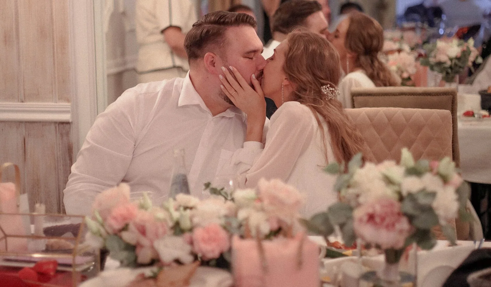
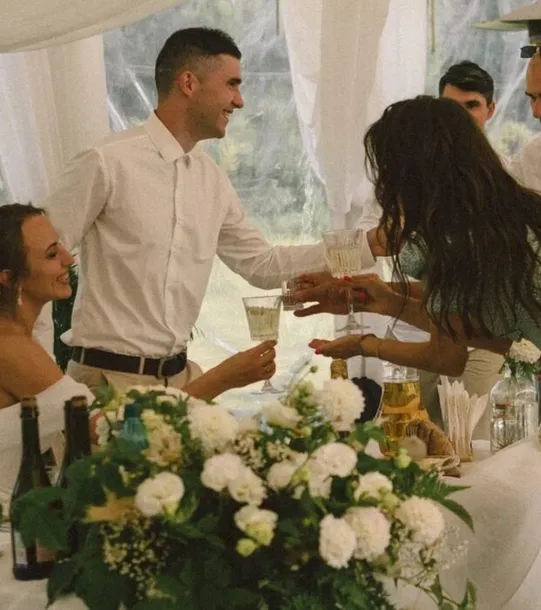

Классический
Элегантные композиции из роз, пионов и орхидей в пастельных тонах
Главная/Свадьбы и события
Цветочное оформление церемонии, банкета и встречи гостей. Если вам нужен только букет невесты, у него есть отдельный заказ.

Арки и алтари для выездной регистрации, цветочные колонны, декор стульев, дорожки из лепестков и зона регистрации.
Стол молодожёнов, центральные композиции на гостевых столах, стулья, вазы и подсвечники, welcome-зона и фотозона.
Классические, каскадные и свободные букеты, бутоньерки, браслеты, венки, заколки и декор бокалов.
Элегантные композиции из роз, пионов и орхидей в пастельных тонах
Роскошные массивные инсталляции из премиальных цветов и изысканного декора
Лаконичные композиции из монохромных цветов с акцентом на форму и пространство
Непринужденные композиции из полевых цветов, зелени и злаков в натуральных оттенках
Свободные асимметричные композиции с использованием экзотических цветов и необычных текстур
Опубликованные цены — нижняя граница пакета. Окончательная смета зависит от площадки, сезонных цветов и объёма работ.
До 10 гостей
До 30 гостей
До 50 гостей
Любое число гостей
Оформление события
Менеджер студии · свадебная консультация
На бесплатной консультации обсуждаем дату, бюджет, палитру и площадку.
Подбираем цветы, материалы и оформление под сезон и стиль события.
Показываем визуализацию и образцы, обсуждаем правки в студии или онлайн.
Закупаем цветы, готовим композиции и оформляем площадку в день торжества или накануне.
«Спасибо за рекомендации, ответы на все-все вопросы…»ИринаСвадьба · 1 сентября 2024
«Всё было волшебно…»Дарина и МихаилСвадьба · 10 августа 2024

«Гости были в восторге, а мы счастливы!»Ирина и ВладимирСвадьба · 21 сентября 2024
Стоимость зависит от масштаба, сезонных цветов и выбранных зон. Мы подбираем варианты под ваш бюджет. Для расчета ответьте на вопросы из брифа
Рекомендуем за 1–2 месяца до свадьбы, особенно в пиковый сезон (май–сентябрь). Но иногда можем взять заказ и за пару недель
Да, мы можем собрать только букет, бутоньерку или цветочные аксессуары
Да, мы можем взять на себя только цветочную часть. Если у вас есть декоратор — мы с ним скоординируемся
Мы подбираем цветы по сезону, пожеланиям и бюджету. Всегда учитываем стойкость и внешний вид в день свадьбы. Для некоторых элементов (например, арки на открытом воздухе) можем использовать качественные искусственные цветы по согласованию
Да, по запросу. Это поможет оценить цветовую палитру и удобство букета заранее
Конечно! Галерея свадебных проектов есть на этой странице сайта
Да, мы оформляем свадьбы и за городом, обсуждаем логистику индивидуально
Да, часть композиций можно аккуратно разобрать и забрать домой или подарить гостям. Все арендованные элементы декора и оформление искусственными цветами мы забираем. По желанию, мы можем забрать и живые цветы с площадки после завершения мероприятия
Да, для свадеб в будние дни и в низкий сезон (ноябрь-февраль) действует скидка 10%.
После обсуждения всех деталей мы оформляем договор и берем предоплату в размере 50% для бронирования даты. Бронь фиксируется только после подписания договора и внесения предоплаты. Предоплата возвращается, если цветы еще не заказаны — обычно мы заказываем их за 2-3 недели до даты свадьбы
Конечно! Мы предоставляем беспроцентную рассрочку на 3 месяца при заказе от 100 000 до 200 000 руб. без участия банка. Также доступны различные варианты рассрочки от банков: 0-0-3 — 3 месяца, без первоначального взноса, переплата 4% 0-0-4 — 4 месяца, без первоначального взноса, переплата 4,5% 0-0-6 — 6 месяцев, без первоначального взноса, переплата 6,5% 0-0-10 — 10 месяцев, без первоначального взноса, переплата 10% 0-0-12 — 12 месяцев, без первоначального взноса, переплата 11,5% 0-0-18 — 18 месяцев, без первоначального взноса, переплата 16% 0-0-24 — 24 месяца, без первоначального взноса, переплата 20,5% Также, вы можете оформить классический кредит на срок от 3 до 24 месяцев. Условия кредитования будут рассчитываться банком, который одобрит займ. Важно: все вопросы по платежам, комиссиям, срокам и условиям рассрочки или кредита вы решаете напрямую с банком. Мы не имеем доступа к информации о платежах, сроках и других деталях
Студия на Ткацкой
Москва, ул. Ткацкая, 46
Ежедневно с 08:00 до 21:00
Самовывоз по предварительному заказу.
Демонстрация завершена. Для реального заказа свяжитесь со студией.